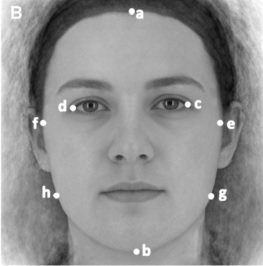
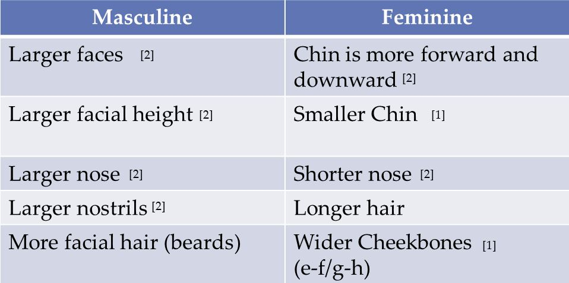

Gender Recognition

Being able to detect with a high degree of accuracy the gender of an individual has many applications (particularly in the world of advertising) and developing an effective technique to determine the gender of an individual from a live camera feed is our goal for this project.Once completed, our method would be able to determine the gender of individuals in front of a camera either within crowds or when by themselves. Thus, it would be possible to assess whether there are more women or men present in a given camera viewing range.We are currently comparing various state of the art feature extraction methods that could be both applied and built upon in order to determine the gender of human subjects. The facial feature extraction methods we are currently experimenting with are: Uniform Local Binary Pattern, Local Binary Pattern and Brief. Then, once an accurate feature extraction method is found machine learning will be used: image databases with appropriate ground truth are used to train a system to recognize the ways in which males and females differ.Once a viable method is found, it will be used in conjunction with the face detection API that we had developed in the related Face Recognition project in order to use a camera feed instead of static images. Currently, the focus is on using an individual's facial features to determine their gender, but there is also potential in using other features, such as a person's hair length, as well as how much skin is visible in their upper body and shoulders.In terms of real world applicability of this project, gender detection of people from a live camera feed can be used to display targeted advertisement to individuals viewing a screen. Such tailored advertising would allow an ad to be more effective in reaching the viewers, as well as, allow the content to be made more engaging to those belonging to the detected gender demographic's majority.
Cheekbone Prominence: e-f/g-h ratio

Table of average gender differences

Recognition Results
Database
Here you can find the databaseReference
Fazl-Ersi E., Mousa-Pasandi E., Laganière R., Awad M., Age and gender recognition using informative features of various types, IEEE International Conference on Image Processing (ICIP), Paris, France, pp.5891-5895, Oct. 2014
Contact
Participants
- Fazl-Ersi, Ehsan
Mousa Pasandi, M. Esmaeel
Pugin, Emilienne